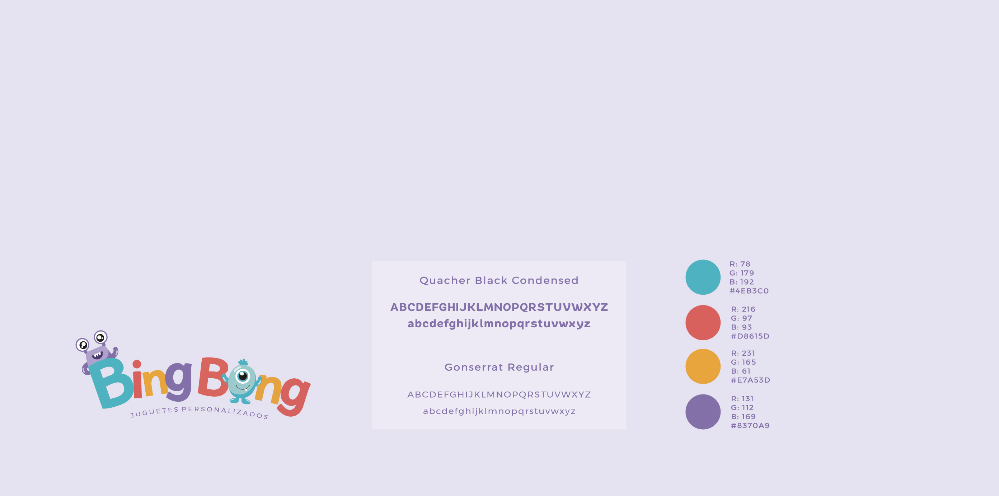

MARCA TIPOGRAFIA CROMA
Para representar este emprendimiento de juguetes personalizados se realizó un isologotipo con la presencia de dos personajes infantiles irreales haciendo alusión a la amplia creatividad de los niños. La marca fue pensada para ser reproducible en diferentes tamaños y soportes.
Se eligieron tipografías San Serif para su fácil legibilidad ya que el público objetivo del emprendimiento son niños en edad de apender a leer.
Se decidió utilizar colore vibrantes y llamativos, ya que se busca que la marca transmita diversión, felicidad, niñez y creatividad.